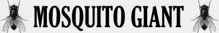

Veleno;
Succhiare il Sangue;

|
|
Ambiente/Habitat | Paludi |
| Frequenza | Common | |
| Organizzazione | Solitario / Piccolo Sciame | |
| Periodo di Attività | Qualsiasi | |
| Dieta | Carnivora | |
| Intelligenza | Non Intelligent [0] | |
| Punti Combattimento | Nessuno | |
| Tesoro | Nessuno | |
| Allineamento Dominante | Neutrale | |
| Numero di Apparizione | 1d12: (1-7) 1 (8-12) 1d3+2 | |
| Classe Armatura | 4 [10 base, -3 corazza, -3 destrezza] | |
| Movimento | 2 esagoni /Volare 8 esagoni | |
| Dadi Vita | 3 | |
| Thac0 | 17 | |
| Numero di Attacchi | Becco | |
| Danni | 1d6+1 (Punta) | |
| Poteri Offensivi | Istinto Predatorio; Veleno; Succhiare il Sangue; |
|
| Poteri Difensivi | Nessuno; | |
| Poteri Generici | Nessuno; | |
| Vulnerabilità | Nessuna; | |
| Resistenza alla Magia | Nessuna | |
| Sensi | Oscurovisione; Sensi Superiori; | |
| Dimensioni | Medium (1,20 m. lunghezza) | |
| Morale | Average (10) | |
| Valore in Punti Esperienza | 259 |
| MODIFICATORI AI TIRI SALVEZZA | |||||||||||||||||||||||
| COR | 0 | 49 | ENV | 0 | 55 | MAG | 0 | 62 | MAL | +10 | 37 | MEN | 0 | 60 | RIF | +5 | 49 | ROB | 0 | 53 | VEL | +5 | 44 |
Descrizione
Il mosquito Giant pur facendo parte della stessa famiglia degli insetti naturali conosciute come ditteri, ha una dimensione di oltre 1 metro. Il Mosquito Giant ha un corpo maculato simile alla pelle di una tigre, lo si trova solo in ambienti palustri sia di giorno che di notte..
Combat
A causa della sua innaturale dimensione non teme di affrontare avversari molto grandi e visibilmente ostili pur di succhiare loro il sangue che necessita per sopravvivere.
ISTINTO PREDATORIO (Moderate Special Ability): La creatura possiede un forte istinto predatorio, per tale motivo costei riceve un bonus costante di +1 ai suoi tiri per colpire.
VELENO (Moderate Special Ability) [BECCO]: Se la creatura colpisce con l'attacco indicato una vittima, la stessa inietterà nel suo corpo il seguente veleno: Tipologia Insinuativo, Onset 1 round, Effetti 0/Incapacitato per 1d3+1 round, Delay None, Tiro Salvezza senza modificatori, Assuefazione nessuna, Note nei round in cui la creatura utilizza il potere speciale "Succhiare il Sangue" la stessa non potrà iniettare nel corpo della vittima il veleno.
SUCCHIARE IL SANGUE (Superior Special Ability) [BECCO]: Questo attacco speciale può essere effettuato solo su creature che non siano più di una taglia di dimensione superiore rispetto alla creatura. Se la creatura colpisce con l'attacco indicato una creatura dotata di corpo organico di tipo animale e sangue costei si attaccherà alla vittima con le zampe uncinate e succhierà 4 punti ferita di sangue a partire dal round successivo alla fine di ogni round senza che sia richiesto alcun tiro per colpire. Quando ha bevuto 20 punti ferita di sangue la creatura si stacca dalla vittima e scappa via. La vittima sulla quale è attaccata ha il 25% di fallire la concentrazione necessaria al lancio degli incantesimi e può attaccare la creatura solo utilizzando armi da corpo a corpo con una penalità di - 1 di penalità se usano armi small, - 2 di penalità se usano armi medium, - 4 se usano armi large. Utilizzare un'arma a due mani impone un'ulteriore penalità cumulativa di - 2 al tiro per colpire. Le altre creature possono attaccare la creatura ma per farlo dovranno superare un tiro salvezza su riflessi (senza applicare il modificatore dovuto alla differenza di livello con la creatura) per ogni attacco effettuato. Al tiro salvezza si applicherà una penalità di - 5% se l'attaccante utilizza un'arma di dimensione medium, una penalità di - 10 % se l'attaccante utilizza un'arma di dimensione large ed una penalità ulteriore e cumulativa di - 5% se l'attaccante utilizza un'arma a due mani. Qualora la vittima resta immobile per tutto il round (considerandosi paralizzata) chi prova ad attaccare la creatura riceverà un bonus di + 10 % al tiro salvezza su riflessi. Se il tiro salvezza riesce l'attacco punterà solo la creatura (che poi dovrà essere regolarmente colpita), se invece la prova fallisce l'attacco punterà sia la creatura che la sua la vittima che si divideranno i danni subiti (ogni arrotondamento è effettuato a favore della vittima). In questo caso è richiesto un unico tiro per colpire su entrambe le creature che mantengono la loro rispettiva classe armatura. Tutti gli effetti ad area, ovviamente, coinvolgeranno sia la vittima che la creatura. Una volta attaccatasi questa creatura non si staccherà prima di essere morta o prima di essersi riempita di sangue della vittima. Si noti che una sola di queste creatura può contestualmente attaccarsi ad una vittima per succhiarle il sangue, le altre eventuali creature dovranno limitarsi ad attaccare la vittima senza utilizzare questo potere speciale.
LESSER COMBO - ISTINTO PREDATORIO e SUCCHIARE IL SANGUE - Le due abilità costituiscono una combo in quanto la prima incide sull'utilizzabilità della seconda. In considerazione della modesta incidenza questa combo può essere considerata minore.
Habitat/Society
Il Mosquitio Giant vive solo nelle zone paludose ed estremamente umide. Nello stadio giovanile, l'ambiente dove è solito vivere è in generale rappresentato da acque stagnanti di varia estensione e profondità, comprese piccole pozze temporanee, dall'acqua piovana raccolta da particolari conformazioni di manufatti di varia natura, fino alle grandi aree umide delle zone interne o costiere (stagni, paludi, foci, ecc.). Sono colonizzate sia le acque dolci sia quelle salmastre. In generale sono evitati i corsi d'acqua, ma larve possono essere presenti presso le rive nelle anse, dove l'acqua tende a ristagnare. Gli adulti delle specie tendono a frequentare gli ambienti prossimi ai siti natali, anche se questi sono vicini ad aree occupate dagli esseri civilizzati. Differentemente dalle altre zanzare che hanno abitudini crepuscolari e notturne, queste creature possono essere incontrate anche durante il giorno. I Mosquito Giant una volta raggiunta l'età adulta sono soliti abbandonare la zona dove sono nate per cercare e formare una propria zona di caccia. Il Mosquito per questo usualmente viene incontrato singolarmente, e solo in alcuni periodi, che corrispondono al periodo della riproduzione possono essere trovati in piccoli sciami composti da femmine che vanno a caccia per poter nutrire le proprie larve.
Ecology
Il Mosquito Giant rappresenta una minaccia relativa per le creature civilizzate in quanto difficilmente esce dalle zone paludose che raramente sono frequentate dagli esseri di cultura superiore. Piuttosto lo sono per gli allevamenti di bestiami che si trovano nelle zone limitrofe alle paludi. Per questo motivo gli interventi degli esseri civilizzati nei loro confronti sono finalizzati a limitarne la proliferazione.
Mystical Resource Sourge (Ghiandola Velenifera) Quantità: 1, Presenza 20% - Effetto Particolare: Veleno - Qualità della Risorsa: Common.